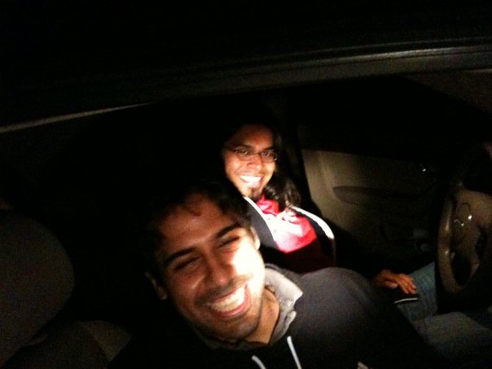
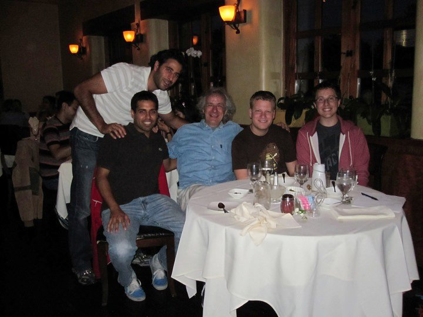
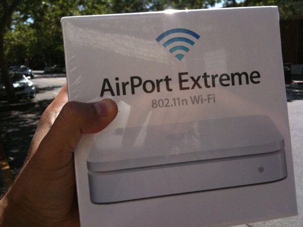

(legally) Hacking into my manager's Facebook account
Pedram, the head of the Site Integrity team at Facebook, challenged his team to hack into his account.
The Site Integrity team is the team responsible for protecting Facebook's user data. The purpose of the challenge was to be a fun team building exercice, make us think outside the box and learn about techniques malicious people might use against us.
Our exact goal was to gain his Facebook password using any method that a non-employee might be able to leverage.
I worked with Dan Muriello, and we eventually managed to break into his account. It did require me to camp outside his home for almost two months!
Typical (and not so typical) phishing techniques
Various team members initially tried to phish him by sending emails or links which would prompt for his Facebook password.
This kind of social engineering attacks work when done at a large scale, but is not effective against a specific well informed person. In addition, since Pedram asked us to break into his account, he was always being more careful than the average person.
Some people even tried sophisticated tricks, such as tab nabbing with no luck.
Finding a weak link
Dan and I decided to drive up to Pedram's home and check out his wifi network. The "ether" is inherently a broadcast medium: if you can get on the wireless network, you can potentially see all the communications, which includes sensitive information like passwords.
We gathered some basic equipment: a laptop, a wifi card with an external antenna, a magnetic mount antenna for the car, etc. When we arrived outside his home, we discovered a few access points. We identified his network and it was encrypted using WEP, a very weak protocol which was deprecated since 2004.
At this point, we thought it was going to be easy (and that we would be done in a few hours). In order to go unnoticed, we stayed a block away from his home. Our signal quality was therefore poor and we didn't grasp what this implied right away.
In hindsight we should have probably postponed our work and returned with a larger, perhaps directional antenna. We were stubborn and we decided to stick with the equipment we had. Also, hindsight is always 20/20.
The known weaknesses in WEP requires capturing a lot of packets, which can be achieved by either waiting for a while or triggering an amplification attack. We had the tools to perform the amplification attack, which involves capturing a specific packet and then replaying it.
About an hour later we had enough weak IVs and the wireless password showed up on our screen: we were inside the network!
Intercepting the login
Once inside his network we could see his internet traffic but there was a problem: the Facebook login page was served over http but the login form was sent over https, which implies the data is encrypted with SSL/TLS.
Thankfully for the internet, SSL/TLS cannot be cracked as easily as WEP. The process of serving the initial page over http is however prone to ssl stripping. If you can modify the traffic, you can remove the https part from the form.
Once you are on a network, there are various ways to force all the traffic to flow through your computer: you can spoof dhcp, spoof arp, send fake dns responses, hijack tcp connections, etc. These are all core networking protocols which were designed with the assumption that the underlying network is secure.
We decided to write our own ARP spoofing tool in python. We also wrote a proxy which strips the https from the login screen. We could have used various off-the-shelf tools, but we wanted to be careful to only grab the Facebook credentials and no other sensitive information.
It's not yet game over
At this point, you might think the game is over. Unfortunately for us, Pedram was mostly using Facebook on his phone and tablet. Our mobile application had hardcoded that the login credentials must be sent over https. It also seems that he was often using a VPN.
We decided to simply wait it out, we were convinced he was going to use his laptop without the VPN at some point. We also wrote some software to do things like drop his VPN connection. This would trick him to connect to the network without the VPN (to figure out if the VPN was causing issues or if it was his network), which would give us an opportunity to grab the credentials.
In order to remain on his network, we decided to purchase a boat battery. The first few days, I slept in my car. The boat battery gave us a few hours of power but we were able to tune our linux kernel to reduce our power usage: we switched off any service we didn't need, such as the screen. We also moved the operating system and all our files to a usb drive and disabled the hard drive.
We scanned the network for any device which we might be able to compromise with no luck. For two months, I would go to work in the morning (charging the boat battery under my desk), drive to Pedram's home in the evening and either sleep in the car or get Dan to drive me home. Over time, we also added a Twitter bot to monitor things. Keeping things running for a long time on the battery turned out to be quite challenging.
Pedram did ask us at one point if we were still trying to hack into his account. I told him yes and that we were right outside his door step. He never thought that I meant it literally!

ARP, wireless networks and race conditions
One problem with ARP attacks is race conditions: the original router and our laptop were both competing to route the traffic. Given that our wireless signal was weak, we were mostly losing this race. We eventually found some clever tricks around this issue.
This race condition also had another side effect: the firewall would see connections from different internal IP addresses and would drop connections. We knew we had to be careful and not make too many mistakes: Pedram started complaining about network issues and he told us that he was about to go buy a new router!
Pulling it off
On June 1st, 2010 we finally stole Pedram's password. We logged into his account and changed his profile picture to a cute fish:
We then triggered an emergency alert on our IRC channel with a message that boiled down to "check your profile picture and also look outside your window". Pedram came out with a flash light and we all had a great laugh:

Afterwards...
-
To thank us for our hard work, we got to have dinner with Cliff Stoll. Cliff is a legend in the field of computer security, it's the best gift we could have dreamed of!

-
Alex Rice, Scott Renfro, a few other engineers and I worked to enable 100% https for our users: A Continued Commitment to Security and made it the default for all users a few years later: Secure browsing by default.
-
Pedram ended up buying a new router. He had previously complained about his home router not working properly and almost purchased it before we were able to steal his password, so close!
